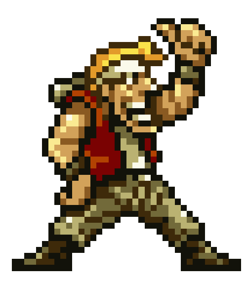
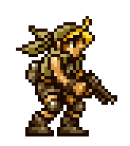
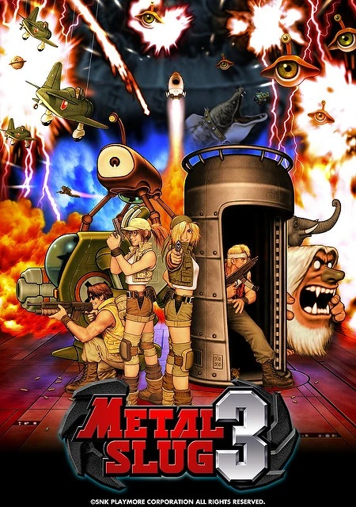
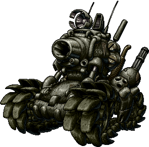
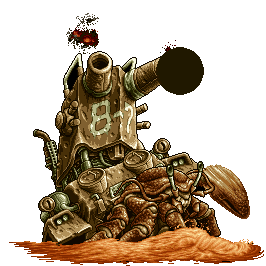
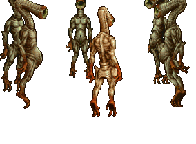
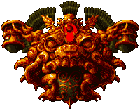
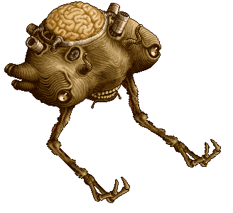

¿Que es Metal slug 3
una serie de videojuegos de tipo run and gun y beat 'em up lanzado inicialmente en las máquinas arcade Neo-Geo y en consolas de juegos creadas por SNK. Ha sido también adaptada a diferentes consolas, El juego es muy conocido por su sentido del humor y su animación hecha a mano, por lo que es considerada como una de las mejores y más destacadas series en su género.
PERSONAJES

Este italiano americano estudió en la facultad de tecnologías especiales de la academia militar tras asistir a una escuela técnica pública. y un intelectual cuya afición es la informática.

Un distinguido militar estadounidense, ingresó en la Escuela de Entrenamiento de las Fuerzas Especiales inmediatamente después de terminar la secundaria. En privado suele burlarse de Marco, pero lo respeta profundamente como soldado.

Huérfana que fue abandonada frente a una iglesia. Sus habilidades de liderazgo fueron descubiertas por la Agencia de Inteligencia de las Fuerzas del Gobierno. Le dio una formación especial como espía, así también su personalidad es muy explosiva.

Fio es la única hija de una familia italiana adinerada. Debido a la tradición familiar, se le exigió que se convirtiera en soldado, por lo que se unió a las Fuerzas Armadas. posee un carácter tranquilo. Fio a veces muestra una ingenuidad y exuberancia casi infantiles. también es experta en el manejo de armas especiales.
Metal slug 3

lanzado originalmente en 2000 para la plataforma arcade Neo-Geo MVS, el juego añade varias características a la jugabilidad, como armas y vehículos, además de introducir ramificaciones en la historia.
LORE
La historia culmina con una batalla épica donde los protagonistas se alían con Morden para enfrentar una invasión alienígena.

huge hermit

Originario de la isla Pallas, antes de crecer hasta alcanzar un tamaño gigantesco debido a la radiación, el Gran Ermitaño es una de las criaturas mutadas nacidas de la prueba nuclear en la isla Pallas. Los Rebeldes capturaron al gigantesco cangrejo y le dieron un tanque Denturion ahuecado para usarlo como caparazón, lo que le permitió (de alguna manera) operar sus torretas, que aún funcionaban.
MONOEYE

Son alienígenas humanoides de 15 metros de altura y los enigmáticos guardianes del OVNI Monoeye . Su nombre se debe a su gran ojo único, que parece ser su único rasgo facial. Atacan a cualquiera que se atreva a acercarse demasiado al OVNI.
JUPITER KING

El Rey Júpiter es un robot defensivo gigante creado por el Ejército Rebelde para proteger su fábrica secreta . Está fuertemente blindado para proteger el reactor nuclear que alberga en su interior.Su armamento consiste en un lanzamisiles en su brazo izquierdo que le permite disparar varios misiles teledirigidos.
SOL DAE ROKKER

Es el protector de las Ruinas de Oro Sol en Sudamérica. Debido al conflicto entre el Ejército Rebelde y el Ejército Regular en torno a las ruinas saqueadas, Sol Dae Rokker se enfureció y comenzó a atacar a los responsables.
JUPITER KING

La Madre Cerebral de los Marcianos", nunca ha mostrado una personalidad definida, pero se dice que su deseo es conquistar la Tierra y aniquilarlo todo. El encuentro con los Invasores demuestra que Rootmars es lo suficientemente racional como para estar dispuesta a cooperar con un antiguo enemigo si surge una amenaza mayor.